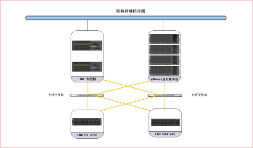
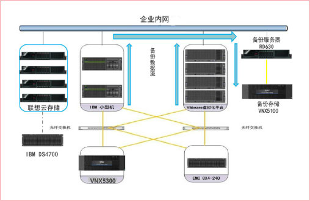
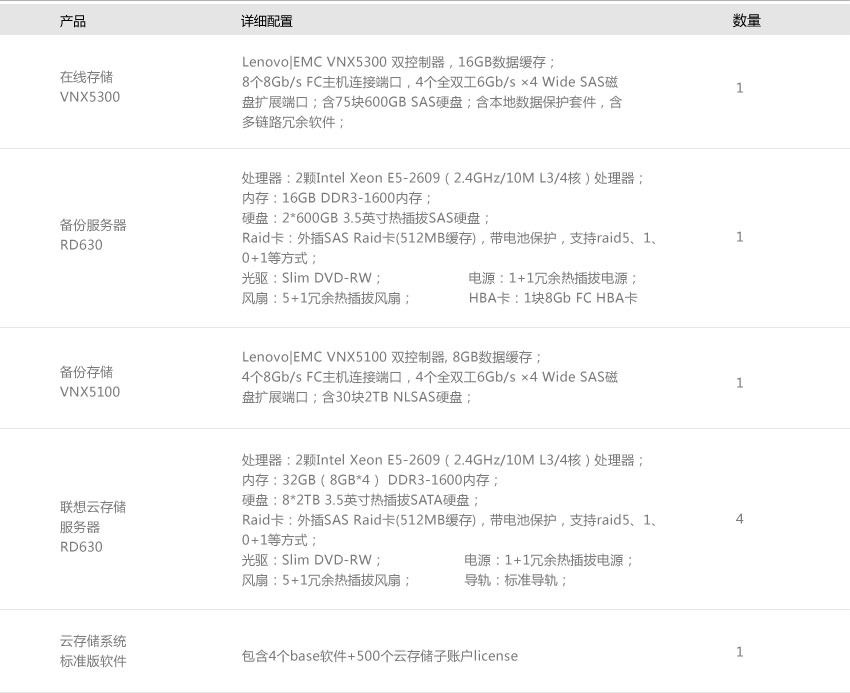

用户需求分析

- 系统现状：
- 4台服务器构建的虚拟化平台于2011年搭建完成，截止到目前共构建了90多个虚拟机，并承载了90多个管理系统应用，数据总量已达6TB（其中2TB部署在 CX4-240上，4TB 部署在DS4700）。随着业务的不断发展，该虚拟化硬件平台将会由目前的4台升级至8台，以便部署更多的虚拟环境，承载更多的应用，同时也带来了更大的存储空间需求；
- 2台IBM小机构成的集群，承载SAP应用，关键数据存放于后台的CX4-240，数据总量截止到目前已达2TB。
- 用户的困惑
- 存储可用空间严重不足
系统中DS4700与CX4-240存储可用总容量为10TB，目前仅剩余340GB空间可用！
- 存储系统存在单点故障，在线数据无安全防护及备份机制，数据安全性无法得到保证
无论是存放于CX4-240中的IBM小机系统中的数据还是存放于CX4-240存储中的虚拟化平台数据，仅在系统中存在一份，无副本，无法保证此在线数据的安全性！
- 存储设备无法统一管理
DS4700与CX4-240存储非同一平台设备，无法再统一界面下进行管理，增加的运维的难度和工作量，不利于数据的统一管理。
- 终端设备（PC机或笔记本）中的数据安全无法得到保证
员工的个人文件以及公司文件均仅存放于本地个人电脑中，一旦出现电脑的故障，轻则影响工作效率，重则造成数据丢失，给工作造成更大的损失。
联想方案建议

- 存储空间的扩容及存储平台的统一管理
在现有FC-SAN环境中接入1台Lenovo丨EMC VNX5300磁盘阵列作为在线扩容存储设备，利用Storage VMotion技术将存放于DS4700和CX4-240存储设备中的VMware虚拟平台下的数据迁移至该设备中，然后移除DS4700，实现同一平台下的管理。
- 近线数据备份机制的建立
虚拟化平台上运行的应用均为管理系统应用，业务高峰和低谷期分明，在工作时间之外的时间整个系统平台处于非常空闲的状态，时间持续可达不小于10个小时（晚8点至次日晨6点），在此时间段内企业内部网络带宽充裕，可以为备份操作系统非常大的数据传输带宽。
虚拟化平台自2011年搭建以来，截止到目前为止总数据容量为6TB，考虑到系统创建支持所占用的数据空间，每年的数据增量为3TB左右，每天的数据增量平均为8.3GB左右，每天的定时备份则仅需在10个小时内备份8.3GB的数据增量，对于业务主干网影响非常微小，故建议采 用LAN备份方式。
- 个人及群组网盘空间的建立
目前该企业两级机关约400多人的办公系统采用传统的PC机模式，个人文件以及工作文件均存放于本地个人电脑中，随着时间的推移，出现了如下几个问题
- 数据量不断增大，导致本地硬盘空间不足的问题凸显；
- 个人电脑不稳定性，使存放于其中的文件尤其是工作文件的安全性无法得到保证；
- 由于工作需要，工作数据无法方便快捷的在群组成员间进行有效的共享和交互；
通过联想云存储设备可实现针对企业内部员工个人本地空间的扩充、部门级别共享空间的扩充，并实现相应权限的管理以及数据的交互。可实现本地属于与网盘数据的自动同步，保证了数据的安全性。
配置清单

用户收益
联想整体解决方案不仅帮助用户解决了迫在眉睫的系统存储空间不足的问题，同时也顺利的完成新老设备间的数据迁移，使得原本管理界面复杂的IT平台，成为了可在同一平台下进行管理的系统，大大提升了系统的管理效率。
在用户内部成功树立了联想专业的、全方位的解决方案专家的形象，为后续 在该系统其它项目的开展奠定了基础。